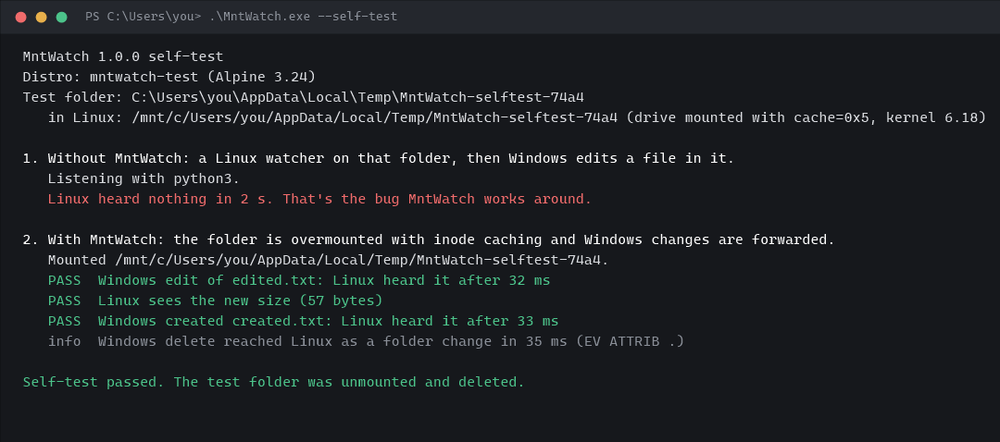

/mnt/cYour code lives on C:\, your dev server runs in WSL 2, and saving a file does nothing. MntWatch is a free Windows tray app that makes Linux file watchers (Vite, webpack, nodemon, Python reloaders, anything on inotify) see the files you edit in Windows. No polling, and no moving your code into the Linux filesystem.

The built-in self-test: the bug first, then the fix. Real output on an Alpine test distro, user name shortened.
WSL mounts your drives with a cache mode where the Linux kernel creates a new inode every time a file is looked up. inotify watches are attached to inodes, so the watch sits on one while every change goes through another. No event ever arrives, whether Windows or Linux made the change. It's been microsoft/WSL#4739 since 2019.
Only the folders you add get an overmount with the same owner and permission settings plus one cache bit that keeps one inode per file. Now inotify works for Linux-side changes.
The exe hears each change through Windows' own notifications and tells a small helper in your distro which paths changed.
The helper writes each file's own mode back to it. Linux refreshes size and time from Windows and raises IN_ATTRIB, which your watcher reports as a change.
| You do this in Windows | Linux watchers see |
|---|---|
| Edit and save | A change on that file, typically 10–30 ms later |
| Create a file | A change on the file and its folder; Node's fs.watch reports it as new |
| Atomic save (temp file + rename) | A change on the file and its folder |
| Delete | A change on the folder (a real delete event can't be faked) |
| Create a folder | A change on its parent; tools that rescan pick it up, see the limits |
Leave CHOKIDAR_USEPOLLING and usePolling off. Changes arrive as real events, with no CPU spent re-reading big trees.
Inside a MntWatch folder, changes made from Linux (codegen, git checkout) fire events again. Without it, they don't either.
Only the folders you pick are touched, and each goes back to normal the moment MntWatch stops, even if it's killed.
It waits for your distro to run, attaches, and steps aside on wsl --shutdown. Pick a distro or use your default.
MntWatch.exe --self-test reproduces the bug on a temp folder, then shows the fix with timings, using whatever inotify tool your distro has.
One exe plus a ~90-line shell script you can read. No driver, no service, MIT-licensed, built by GitHub Actions.
C:\dev\my-app.cd back into the folder in open shells.MntWatch.exe --run C:\dev\my-app
MntWatch.exe --run C:\dev\app D:\site --distro Ubuntu --verbose
MntWatch.exe --self-testfs.watch) handle it.notify/watchfiles and Go fsnotify only watch a new subfolder after a real IN_CREATE, so they need a restart to see files inside it.\\wsl$ and network drives.Polling works, but it costs CPU on big trees, adds delay, and has to be configured in every tool, often in every project. With MntWatch, the default inotify mode works.
That's Microsoft's advice and the fastest setup, so do it if you can. MntWatch is for when the files have to stay on Windows: Windows-only tools, an editor without remote mode, sync folders, backups, or a repo shared with Windows builds.
Mounting needs root, and wsl.exe --user root needs no password. The script is in the repo and is sent fresh each time. It only mounts and unmounts the folders you added, runs stat and chmod (each file's own mode back, symlinks skipped) on paths Windows reported, and find if Windows reports lost events. It never writes file contents and never deletes anything.
Node's fs.watch (what chokidar, and so Vite, webpack and nodemon, are built on) and Python's watchdog were tested and got every edit, including 20,000-file bursts. The dev servers themselves weren't tested one by one yet. If yours doesn't reload, run the self-test and open an issue with the output.
Windows 11, WSL 2.7.13, kernel 6.18, an Alpine 3.24 distro: edits, new files and folders, atomic saves, deletes, bursts, Linux-side writes, metadata mounts, symlinks, and MntWatch being killed. Not yet: Ubuntu or Debian, and older kernels. Kernels too old to accept the cache flags are refused with a "run wsl --update" message.
"Hot reload doesn't work in WSL 2" is one of the oldest open WSL complaints, and the answers are always polling or "move your files".